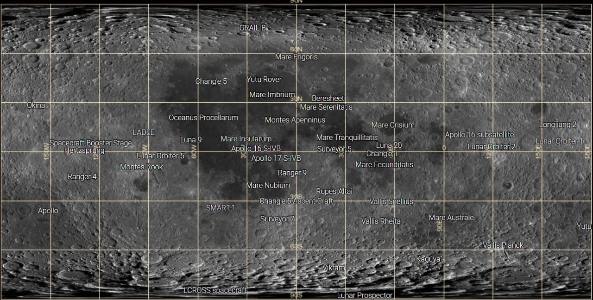

Illumination
Sunlight supplies solar power and moderates surface temperature. Near the poles the Sun stays close to the horizon, so illumination can change sharply over short distances and time spans, and long shadows can hide hazards.
NASA Space Apps Challenge
Lunar Landing Site Navigator
Explore lunar regions, inspect their data, and evaluate landing suitability with machine learning.
NASA Space Apps Challenge
Selecting where to land on the Moon means balancing sunlight, terrain and a line of sight to Earth. This platform lets you explore lunar regions on a real map, inspect their dataset values, and evaluate landing suitability with a trained machine learning model.

01 Explore Map
Select a region marker to read its dataset values. Markers are placed from each region's latitude and east longitude on the map's verified lat/long grid. Scroll or use the controls to zoom, drag to pan.
02 Site Analysis
The selected region's values are sent to the FastAPI backend, which runs the trained model and returns a landing score and class.
03 Compare Sites
Select two to four regions to compare their dataset values side by side. Model results appear after you analyze the sites.
04 About Project
Every candidate site is a trade-off. The Moon's poles, with their low sun angles and long shadows, make that trade-off especially demanding. This tool brings the main factors together in one place.
Sunlight supplies solar power and moderates surface temperature. Near the poles the Sun stays close to the horizon, so illumination can change sharply over short distances and time spans, and long shadows can hide hazards.
A lander needs ground that is gentle enough to touch down on safely. Steep slopes and rough terrain raise tipping and hazard risks. Elevation shapes both terrain and what the site can see of the sky and horizon.
Direct communication with Earth needs a line of sight. Sites on the far side, or hidden behind local terrain, cannot reach Earth directly and need relay support.
A random-forest model, served through FastAPI, turns sun elevation, azimuth, position, illumination and Earth visibility into a landing score and a class (Poor, Moderate, Good or Excellent). It supports screening; it does not replace mission analysis.
Shown exactly as loaded from the project's CSV file. Missing values appear as “Not Available”. Nothing is filled in or estimated.
The API computes the earth_visible flag from Earth visibility (greater than 50%) before running the model. It is not read from the CSV for prediction.
The landing score and class come straight from the API response. They are model predictions, not measurements, and are never presented as probabilities.